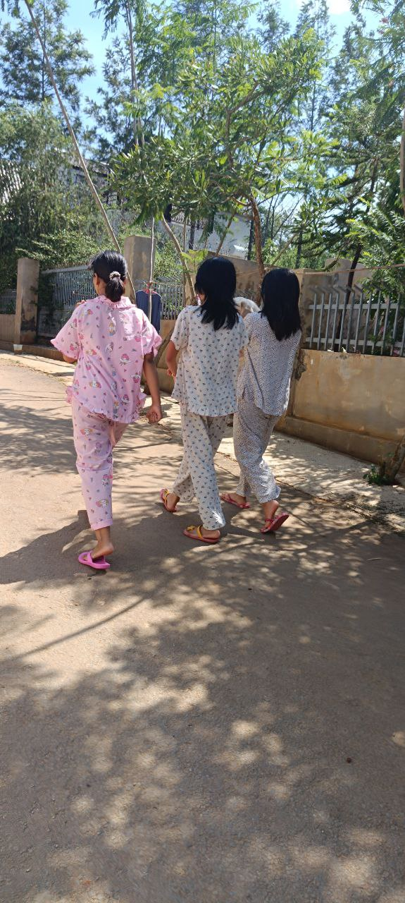
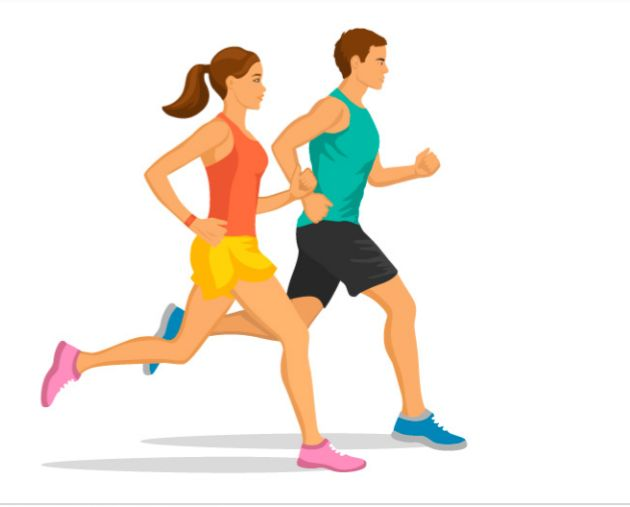

Morning Walk

Yoga Time

Playing badminton

jumping rode

Do exercise

Running
Regular fitness and exercise are essential for maintaining a healthy body and mind. Engaging in physical activity helps strengthen muscles, improve heart health, and boost energy levels. Whether it's walking, jogging, yoga, or team sports, consistent movement supports mental well-being by reducing stress and increasing focus. Building an active lifestyle doesn’t require perfection—just small daily steps that add up to long-term health benefits.
Click below to explore more healthy habits and stay on track.
Go to Next Page